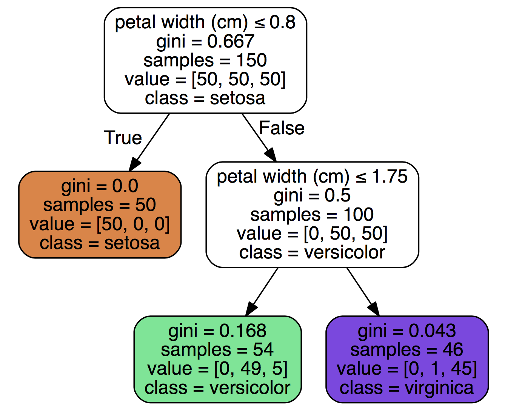
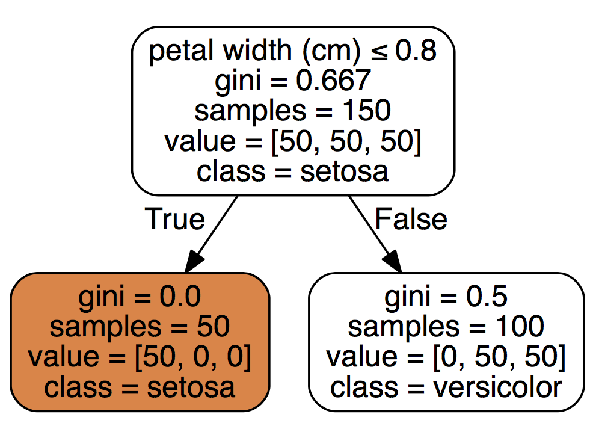
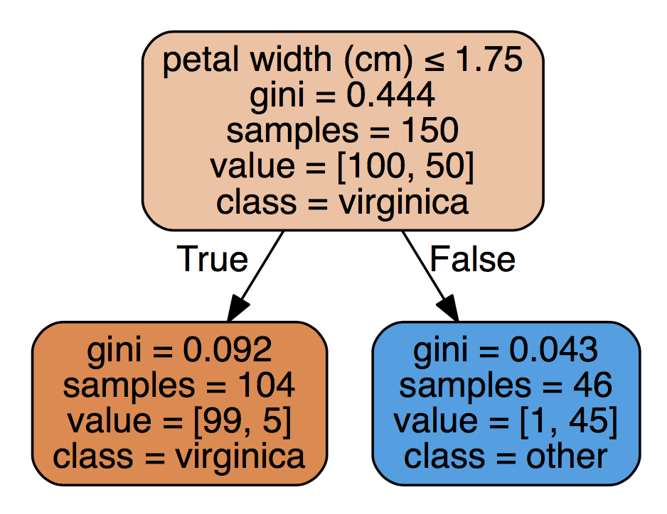

Practical walkthroughs on machine learning, data exploration and finding insight.
Resources

Before breaking out the big algos on a new dataset, it is a good idea to explore the simple, intuitive patterns (i.e. heuristics). This will pay off in droves. It not only exposes you to your data, it makes you understand it and gives you that critical ‘business knowledge’. People you work with will ask you general questions about the data, and this is how you can get to it. The goal here is to find the important values that can explain a particular target outcome. We’ll use sklearn’s DecisionTreeClassifier for some powerful, non-linear splits and graphviz for exporting and visualizing the trees.
I’ll use the Iris multivariate data set to illustrate this simple tool. The data set can be obtained directly through sklearn’s datasets import.
You will also need to ‘install graphviz’ if you don’t already have it.
import pandas as pd
import numpy as np
# !pip install graphviz
from sklearn import tree
from sklearn import datasets
# import some data to play with
iris = datasets.load_iris()
sklearn offers the data in a handy object, so we need to transform it a bit to get it into our usual data frame format.
dataset = iris.data
df = pd.DataFrame(dataset, columns=iris.feature_names)
df['species'] = iris.target
# define feature space
features = iris.feature_names
target = 'species'
df.head(3)Out[323]:
sepal length (cm) sepal width (cm) petal length (cm) petal width (cm) \
0 5.1 3.5 1.4 0.2
1 4.9 3.0 1.4 0.2
2 4.7 3.2 1.3 0.2
species
0 0
1 0
2 0
A quick look at the balance of targets:
# check balance of target values
from collections import Counter
Counter(df['species'])Out[322]: Counter({0: 50, 1: 50, 2: 50})iris.target_namesOut[331]:
array(['setosa', 'versicolor', 'virginica'],
dtype='|S10')Let’s call the DecisionTreeClassifier and the export_graphviz from sklearn. The classifier is a straightforward tree-based classification model where we’ll pass it our desired tree depth of 1 to only look at single features.
HOW_DEEP_TREES = 1
clf = tree.DecisionTreeClassifier(random_state=0, max_depth=HOW_DEEP_TREES)
clf = clf.fit(df[features], df[target])
clfOut[328]:
DecisionTreeClassifier(class_weight=None, criterion='gini', max_depth=1,
max_features=None, max_leaf_nodes=None,
min_impurity_decrease=0.0, min_impurity_split=None,
min_samples_leaf=1, min_samples_split=2,
min_weight_fraction_leaf=0.0, presort=False, random_state=0,
splitter='best')We pass our trained model to the tree.export_graphviz to export the tree and render it:
import graphviz
dot_data = tree.export_graphviz(clf, out_file=None, feature_names=features,
class_names=iris.target_names, filled=True, rounded=True, special_characters=True)
graph = graphviz.Source(dot_data)
graph.render('dtree_render',view=True)
To interpret the above chart, we see that feature petal width (cm) when it is smaller or equal to 0.8 yields to class setosa and that out of a sample of 50 cases, 100% fulfilled that rule. A petal width (cm) above 0.8 yields to versicolor, and out of a sample set of 100 rows, 50 fulfilled that rule. Because this is a multivariate data set, we can assume that both versicolor and virginica are larger than 0.8. The model selected the petal width (cm) feature, thus we can assume it thinks its the most important feature.
If you want to only understand target virginica, you can always change the target feature to account for it and relegate the other two to class ‘other’:
df_temp = df.copy() # use a copy of the data so we don't have to rebuild it again
# bianry outcome - is it virginica or not?
df_temp['species'] = np.where(df_temp['species']==2, 1,0)
clf = tree.DecisionTreeClassifier(random_state=0, max_depth=HOW_DEEP_TREES)
clf = clf.fit(df_temp[features], df_temp[target])
dot_data = tree.export_graphviz(clf, out_file=None, feature_names=features,
class_names=['virginica','other'], filled=True, rounded=True, special_characters=True)
graph = graphviz.Source(dot_data)
graph.render('dtree_render',view=True)
If you want to explore feature interaction, you simply need to set the HOW_DEEP_TREES value to something larger (see top graph for an example of 2 features per tree).
This tool easily and visually breaks down splits in data - one thing to keep in mind is that this approach always fits ‘perfectly’ (some may say over-fits) your training data. To help it generalize a bit more with real world data, you can break it up into smaller random chunks and fit those numerous times inside a loop. Let’s build exactly that but instead of rendering it graphically, we’ll only extract the features and split values. The goal here is to get to important values in the data that explain a target. Let’s increase the number of features per tree and run it 20 times with data samples of size 10:
import random
feature_splits = []
HOW_DEEP_TREES = 2
clf = tree.DecisionTreeClassifier(random_state=0, max_depth=HOW_DEEP_TREES)
for x in range(0,20):
# sample should be smaller than df size
rows = random.sample(df.index, 10)
sample_frame = df.ix[rows]
estimator = clf.fit(sample_frame[features], sample_frame[target])
n_nodes = estimator.tree_.node_count
children_left = estimator.tree_.children_left
children_right = estimator.tree_.children_right
feature = estimator.tree_.feature
threshold = estimator.tree_.threshold
cur_node = ''
for i in range(n_nodes):
if (threshold[i] >= 0):
cur_node = cur_node + features[feature[i]] + ' <= ' + str(threshold[i]) + " "
#feature_splits[features[feature[i]]].append( threshold[i] )
if (len(cur_node) > 0):
feature_splits.append(cur_node)
feature_splitsOut[336]:
['petal width (cm) <= 1.64999997616 sepal width (cm) <= 3.0 ',
'sepal width (cm) <= 3.09999990463 petal length (cm) <= 5.09999990463 ',
'petal width (cm) <= 0.699999988079 petal length (cm) <= 4.65000009537 ',
'petal width (cm) <= 0.949999988079 petal length (cm) <= 4.80000019073 ',
'petal width (cm) <= 0.649999976158 petal width (cm) <= 1.64999997616 ',
'petal width (cm) <= 1.54999995232 sepal width (cm) <= 3.0 ',
'sepal width (cm) <= 3.15000009537 petal length (cm) <= 4.84999990463 ',
'sepal length (cm) <= 6.14999961853 petal length (cm) <= 2.79999995232 sepal width (cm) <= 2.90000009537 ',
'petal width (cm) <= 0.600000023842 petal width (cm) <= 1.64999997616 ',
'petal width (cm) <= 1.64999997616 sepal width (cm) <= 3.15000009537 ',
'petal width (cm) <= 1.64999997616 petal length (cm) <= 2.84999990463 ',
'sepal width (cm) <= 3.15000009537 petal length (cm) <= 4.80000019073 ',
'sepal width (cm) <= 2.95000004768 sepal width (cm) <= 2.25 sepal length (cm) <= 5.75 ',
'petal width (cm) <= 1.64999997616 petal length (cm) <= 2.65000009537 ',
'petal width (cm) <= 0.649999976158 sepal width (cm) <= 3.09999990463 ',
'petal width (cm) <= 0.699999988079 petal length (cm) <= 5.09999990463 ',
'petal length (cm) <= 4.75 sepal width (cm) <= 3.34999990463 ',
'petal width (cm) <= 0.650000035763 petal length (cm) <= 4.89999961853 ',
'sepal width (cm) <= 3.04999995232 petal length (cm) <= 3.59999990463 ',
'petal width (cm) <= 0.949999988079 petal width (cm) <= 1.75 ']
Though we don’t see what split explains what target, we get an interesting series of split values. Clearly, the petal width (cm) is the most important feature, yet sepal width (cm) and petal length (cm) do also appear. More interesting (as I’d consider the rare appearance of a features as more of an aberration), the split values of petal width (cm) are different for each run. All this is great data intelligence to those that want to better understand their data, and offer a general direction for further investigation as to why those splits are important and what that means in the context of your business.